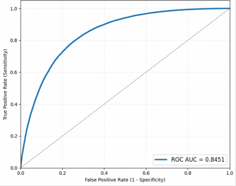

gPPIpred
Matiolli CC†, Marques J†, Abreu IA. gPPIpred: A User-Friendly PPI Predictor Based on Protein Molecular Graphs. (2026). DOI: 10.17912/micropub.biology.001796.
Open article →The strongest machine-learning work in this trajectory doesn't flatten biology into arbitrary spreadsheet rows and columns. It builds the relationships directly into how the model "sees" the data — as protein shapes, interaction networks, and organized biological categories.
Years after running Y2H experiments by hand in the lab, gPPIpred answers the same kind of question — will these two proteins interact? — computationally instead. Each protein is represented as a 3D graph, where the building blocks (amino acids) are dots and physical closeness between them is the connecting lines. An AI model then compares two of these protein graphs side by side and predicts whether they'll stick together, while also highlighting which specific spots on the protein surface likely drive the interaction.
Tested against 72,358 protein pairs it had never seen before, the model correctly flagged 96% of true interactions, with an overall accuracy score (MCC) of 0.46 — a solid result for a hard prediction problem like this one.

Matiolli CC†, Marques J†, Abreu IA. gPPIpred: A User-Friendly PPI Predictor Based on Protein Molecular Graphs. (2026). DOI: 10.17912/micropub.biology.001796.
Open article →Aid2Go connects several kinds of protein information — known interactions, a standardized biological classification system (Gene Ontology), and lab-confirmed function labels — into a single network. A protein's amino-acid sequence becomes just one input feeding that network, instead of being asked to explain everything on its own.